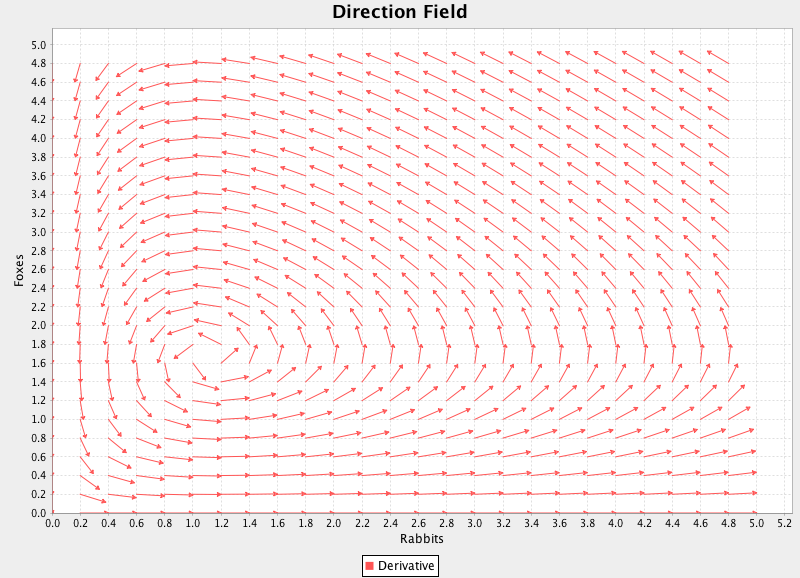
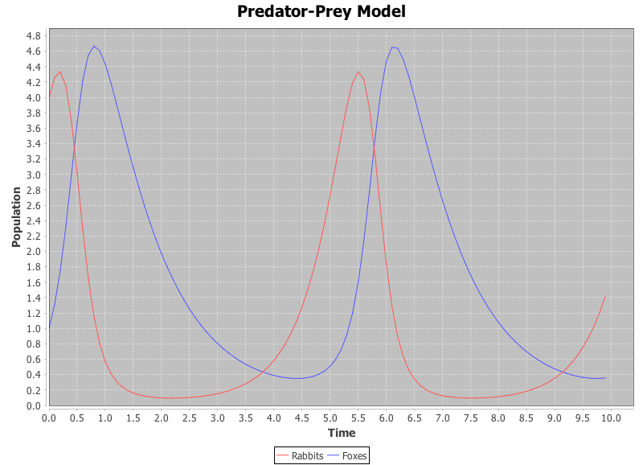

Predator-Prey Modeling in Clojure
Introduction to Predator-Prey Systems
In this edition of the blog, I'll discuss how you can use Clojure to solve a system of nonlinear differential equations. he particular system I'll be solving is the Predator-Prey or Lotka-Volterra Model, which you can read all about right here. The basic concept is that you are modeling a population of predators and prey (e.g. Foxes and Rabbits, which we'll use here). How the two populations change over time can be modeled like so:
\({dR\over dt} = \alpha R - \beta R F\)
\({dF\over dt} = - \gamma F + \delta R F\)
These are differential equations, meaning equations that model the change of the system as a function of its state as opposed to an equation that allows you to directly compute the system's state.
The variables and parameters are:
\({dR\over dt}\): The rate of change of the rabbit population over time.
\({dF\over dt}\): The rate of change of the fox population over time.
\(R\): Current rabbit population. Note that this is a continuous value. You could have 4.5 rabbits. If this causes you heartburn, think of it as thousands or rabbits in which partial rabbits are still gestating.
\(F\): Current fox population. The same notes apply as in (R).
\(\alpha\): The reproduction rate of the rabbits. If you look at the equation, a larger (\alpha) will increase the rate of rabbit population growth.
\(\beta\): The predation rate of the rabbits. This value negatively affects the rabbit population as it models the interaction between foxes and rabbits.
\(\gamma\): The death rate of the foxes. This is a negative term as the foxes will die when left to their own devices.
\(\delta\): This models the growth rate of foxes with respect to their interaction with rabbits. Foxes are positively affected when they interact with rabbits because rabbits are their food source.
Method of Solution
There is no closed-form solution to this problem (i.e. There is no simple pair of equations (F(t)) and (R(t)) that satisfy the governing differential equations described above.). This is often the case in differential equations. Since a closed-form solution does not exist, the problem of determining the populations at any given time must be solved numerically.
Here is a basic overview of how this is done:
- Starting with an initial state, compute how the state is changing by plugging the current state into the differential equations.
- Multiply the resulting differential values by some small time step and add these scaled values to the initial state.By repeating this process, you can step forward in time and compute the state of your model at any given time. This numerical method is called Euler's method and isn't particularly accurate since the "small time step" in step 2 doesn't account for instantaneous time changes. It is just an approximation. To get better answers, you can compute multiple values of the differential equations and add them together in such a way as to produce a much better solution. This family of solutions is called Runge-Kutta (RK) methods. Read all about them here. The details of RK methods are beyond the scope of this blog, but one thing to know is that any explicit RK method can be described by what's called a Butcher Tableau (BT). The BT tells how many derivatives are to be computed, at what points they are computed, and how they are averaged to compute a more accurate solution.
Implementation in Clojure
In most introductory texts, the "Classic" 4th Order RK Method is described and implemented. This is simply a single RK method with a specific Butcher Tableau that yields 4th order polynomial accuracy when computing a solution. I've implemented a general RK solver in Clojure instead. To make my implementation "general," I've written the method such that it takes any Butcher Tableau as an argument so you are not limited to the classic 4th order RK method. Note that you can find the entire project on my Github page here.
Here's the code for computing a single step in a RK method:
(defn ki "Compute a single k value for a system of difeqs."
[f [tn & yn] dt a c k]
(let [dy (map #(* dt (reduce + (map * a %))) k)]
((apply juxt f) (into [(+ tn (* dt c))] (map + yn dy)))))
(defn ks "Compute all of the k values (derivatives) in the step."
[f ic dt { :keys [a c] }]
(loop [ks (repeat (count f) []) ai a ci c]
(if-not (first ci)
ks
(recur
(map conj ks (ki f ic dt (first ai) (first ci) ks))
(rest ai)
(rest ci)))))
(defn integrate
"Perform the numerical integration step by adding the
weighted derivatives to the initial conditions."
[k [tn & yn] dt b]
(let [deltas (map #(reduce + (map * b %)) k)]
(into [(+ tn dt)] (map #(-> %1 (* dt) (+ %2)) deltas yn))))
(defn rk-step "Take a single step forward by dt"
[f ic dt { :keys [b] :as tableau}]
(integrate (ks f ic dt tableau) ic dt b))
I don't really expect most readers to dive right in and understand this code, since it requires an understanding of both numerical methods and Clojure. However, there are a few things I'd like to point out:
- The solution is implemented in 25 lines of code and works with a variety of Butcher Tableaus for varying accuracy. Having implemented this before in different languages (C++, Scala) I can say that this is easily the shortest and most concise version I've done yet. Although brevity isn't an end unto itself, I really like having a full implementation of an algorithm that fits in a single window since it makes it much easier for me to see everything that's going on.
- This project makes heavy use of destructuring. For this unfamiliar with this, it is a Clojure language feature for quickly extracting elements of data structures. Read more about destructuring here and here. When you first start using it, it seems very weird. Once you get used to it, you can't live without it.
- The way explicit RK methods work, you recursively build up your k matrix (k is a set of derivative values computed using previous values) at each step. This provides a great example of how to use Clojure's loop-recur pattern.
- One interesting challenge I had with this problem was how to properly accumulate the k matrices (derivatives). Without going into the details, I had to construct a set of growing column vectors with each recur. To make these grow I used map conj to add the new values onto the earlier vectors. The problem was that on the initial pass I needed empty vectors to conj into. To solve this problem I initialized my k column vectors with this form: (repeat (count f) []), where f is my system of differential equations. Once I figured this out it worked like a charm. Often this is the case in Clojure - You spend more time thinking about your solution than writing it.
- Once again, I got to use the awesome juxt function. This time, I used it to turn my set of equations into a single function that returned a vector of results.
To compute the solution, the rk-step function is called with the equations to be solved, the initial conditions, the desired time step, and the Butcher Tableau. Here is how the BT for the classic 4th order RK method is defined:
(def classic-fourth-order
{ :c [0 0.5 0.5 1.0]
:a [[]
[0.5]
[0.0 0.5]
[0.0 0.0 1.0]]
:b [(/ 1.0 6.0) (/ 1.0 3.0) (/ 1.0 3.0) (/ 1.0 6.0)] })
I've defined a variety of common BTs in this namespace.
And here is how I would use the code:
(def dt 0.1)
(def ic [0 4 1])
(defn dr [[_ R F]] (- (* 2.0 R) (* 1.2 R F)))
(defn df [[_ R F]] (- (* 0.9 R F) F))
(def steps (take 100 (iterate #(rk/rk-step [dr df] % dt tableaus/classic-fourth-order) ic)))
Now that you've seen the code, let's take a look at some results.
Results
One way that differential equations can be analyzed is with a direction field. This works well for a system of 2 equations. You plot the derivatives as vectors at each point in their state space to see how the system changes at any given state. In this case, I made each arrow a single length, so we are only looking at direction of change, not magnitude. Below, I show an example of a direction field using the dr and df functions from the above code example. You can see that there is an equilibrium point around which the system spirals. At this point, there are a perfect number of foxes and rabbits such that the populations remain constant. The spiral behavior should be intuitive. If there are a small number of foxes, the rabbit population will grow. This results in more available food, so the fox population will then grow. As the fox population grows there are more predators and the rabbit population is hunted down. As the rabbit population decreases, food becomes scarce and the foxes starve to death. Finally, we are back where we started (a small number of foxes, allowing the rabbit population to rise again).

The same trend can be shown in time (see below). This shows how the rabbit population leads the fox population. When there are a lot of rabbits, there will soon be a lot of foxes since there is a lot of food. Conversely, when there are few rabbits, the fox population will soon die off.

Note that these charts were generated using JFreeChart.
Interactive Demo
Since this is Clojure, I would be doing it all wrong if I just targeted the JVM. Using the excellent cljx lien plugin this code cross-compiles to ClojureScript as well so that it works in the browser. Here is an interactive demo in which you create a phase space plot by adjust the initial populations of foxes and rabbits as well as the parameters affecting population growth and interaction. This plot shows what happens when you pick an initial location and parameters in a direction field and march forward in time. It shows all possible states for those particular initial conditions with the given equations.
Conclusion
Clojure is a great language for numerical analysis. The fact that it is functional makes it very intuitive to code up mathematical relations that have the same functional underpinnings.
Finally, RK methods, including this particular implementation, aren't just for research problems like what was presented here. If you were to write a game engine with a physics element, this would be a perfect code library for computing your force interactions at every frame. Just compute the time delta between frames for your time step and use Newton's Second Law as your governing equation. The dual JVM/JavaScript implementation also makes it easy for your simulation to run in a desktop client or in the browser.
Afterword
If you liked this page or learned anything from it, please tweet the link and/or follow me on Twitter. Your support and interest is the fuel that drives the effort.